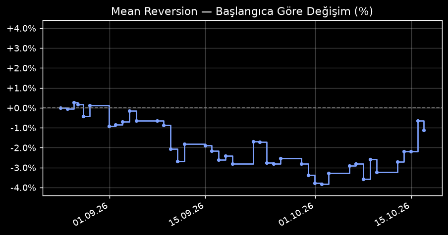

| Sembol | Giriş | Güncel | Stop | K/Z | |
|---|---|---|---|---|---|
| HSIC | $85.87 | $86.38 | $83.13 | +0.59% | ▸ |
Alım tarihi 18.09.2026 14:31 UTC Açık süre 28 gün 5 saat Adet 3 Ortalama alım fiyatı $85.87 Pozisyon büyüklüğü (maliyet) $257.61 Güncel fiyat $86.38 Güncel K/Z +1.53$ (+0.59%) Stop seviyesi $83.13 Stop'a uzaklık 3.77% Alım gerekçesi
Bu sembolde önceki kapanmış işlemler
| |||||
| DXCM | $85.92 | $86.04 | $81.78 | +0.14% | ▸ |
Alım tarihi 12.10.2026 23:44 UTC Açık süre 3 gün 20 saat Adet 10 Ortalama alım fiyatı $85.92 Pozisyon büyüklüğü (maliyet) $859.20 Güncel fiyat $86.04 Güncel K/Z +1.20$ (+0.14%) Stop seviyesi $81.78 Stop'a uzaklık 4.95% Alım gerekçesi
Bu sembolde önceki kapanmış işlemler
| |||||
| GRMN | $276.41 | $284.82 | $265.08 | +3.04% | ▸ |
Alım tarihi 13.10.2026 21:56 UTC Açık süre 2 gün 22 saat Adet 2 Ortalama alım fiyatı $276.41 Pozisyon büyüklüğü (maliyet) $552.82 Güncel fiyat $284.82 Güncel K/Z +16.81$ (+3.04%) Stop seviyesi $265.08 Stop'a uzaklık 6.93% Alım gerekçesi
Bu sembolde önceki kapanmış işlemler
| |||||
| MMM | $162.77 | $164.72 | $156.99 | +1.20% | ▸ |
Alım tarihi 13.10.2026 21:56 UTC Açık süre 2 gün 22 saat Adet 4 Ortalama alım fiyatı $162.77 Pozisyon büyüklüğü (maliyet) $651.08 Güncel fiyat $164.72 Güncel K/Z +7.80$ (+1.20%) Stop seviyesi $156.99 Stop'a uzaklık 4.69% Alım gerekçesi
Bu sembolde önceki kapanmış işlemler
| |||||
| DE | $650.38 | $641.85 | $601.80 | -1.31% | ▸ |
Alım tarihi 14.10.2026 20:53 UTC Açık süre 1 gün 23 saat Adet 1 Ortalama alım fiyatı $650.38 Pozisyon büyüklüğü (maliyet) $650.38 Güncel fiyat $641.85 Güncel K/Z -8.53$ (-1.31%) Stop seviyesi $601.80 Stop'a uzaklık 6.24% Alım gerekçesi
Bu sembolde önceki kapanmış işlemler
| |||||
| PRU | $116.35 | $115.89 | $110.90 | -0.40% | ▸ |
Alım tarihi 15.10.2026 20:29 UTC Açık süre 23 saat Adet 14 Ortalama alım fiyatı $116.35 Pozisyon büyüklüğü (maliyet) $1,628.90 Güncel fiyat $115.89 Güncel K/Z -6.44$ (-0.40%) Stop seviyesi $110.90 Stop'a uzaklık 4.31% Alım gerekçesi
Bu sembolde önceki kapanmış işlemler
| |||||
| NEM | $115.79 | $118.58 | $110.30 | +2.41% | ▸ |
Alım tarihi 15.10.2026 20:29 UTC Açık süre 23 saat Adet 9 Ortalama alım fiyatı $115.79 Pozisyon büyüklüğü (maliyet) $1,042.11 Güncel fiyat $118.58 Güncel K/Z +25.11$ (+2.41%) Stop seviyesi $110.30 Stop'a uzaklık 6.98% Alım gerekçesi
Bu sembolde önceki kapanmış işlemler
| |||||
| SPG | $203.39 | $205.53 | $197.32 | +1.05% | ▸ |
Alım tarihi 15.10.2026 20:29 UTC Açık süre 23 saat Adet 4 Ortalama alım fiyatı $203.39 Pozisyon büyüklüğü (maliyet) $813.56 Güncel fiyat $205.53 Güncel K/Z +8.56$ (+1.05%) Stop seviyesi $197.32 Stop'a uzaklık 3.99% Alım gerekçesi
Bu sembolde önceki kapanmış işlemler
| |||||
| SWKS | $79.70 | $79.70 | $69.24 | +0.00% | ▸ |
Alım tarihi 16.10.2026 20:02 UTC Açık süre 0 dakika Adet 6 Ortalama alım fiyatı $79.70 Pozisyon büyüklüğü (maliyet) $478.20 Güncel fiyat $79.70 Güncel K/Z +0.00$ (+0.00%) Stop seviyesi $69.24 Stop'a uzaklık 13.12% Alım gerekçesi
Bu sembolde önceki kapanmış işlemler
| |||||
| BNY | $143.25 | $143.25 | $135.06 | +0.00% | ▸ |
Alım tarihi 16.10.2026 20:02 UTC Açık süre 0 dakika Adet 5 Ortalama alım fiyatı $143.25 Pozisyon büyüklüğü (maliyet) $716.25 Güncel fiyat $143.25 Güncel K/Z +0.00$ (+0.00%) Stop seviyesi $135.06 Stop'a uzaklık 5.72% Alım gerekçesi
Bu sembolde önceki kapanmış işlemler
| |||||
| Tarih | Sembol | Adet | Fiyat | K/Z | |
|---|---|---|---|---|---|
| 2026-10-16 | COIN | 4 | $173.16 | -42.60$ | ▸ |
Alım tarihi 15.10.2026 20:29 UTC Satım tarihi 16.10.2026 20:02 UTC Tutulma süresi 23 saat K/Z -42.60$ Çıkış sebebi / gerekçe Uzun vadeli trend (SMA200) kırıldı, çıkış. RSI14=37.78, fiyat=173.16. | |||||
| 2026-10-15 | BBY | 11 | $94.17 | +68.31$ | ▸ |
Alım tarihi 13.10.2026 21:56 UTC Satım tarihi 15.10.2026 20:29 UTC Tutulma süresi 1 gün 22 saat K/Z +68.31$ Çıkış sebebi / gerekçe RSI toparlandı (>55), dönüş tamamlandı. RSI14=59.7, fiyat=94.17. | |||||
| 2026-10-15 | CF | 12 | $119.77 | +62.28$ | ▸ |
Alım tarihi 12.10.2026 23:44 UTC Satım tarihi 15.10.2026 20:29 UTC Tutulma süresi 2 gün 20 saat K/Z +62.28$ Çıkış sebebi / gerekçe RSI toparlandı (>55), dönüş tamamlandı. RSI14=65.55, fiyat=119.77. | |||||
| 2026-10-15 | CRM | 3 | $246.74 | +66.54$ | ▸ |
Alım tarihi 07.10.2026 22:12 UTC Satım tarihi 15.10.2026 20:29 UTC Tutulma süresi 7 gün 22 saat K/Z +66.54$ Çıkış sebebi / gerekçe RSI toparlandı (>55), dönüş tamamlandı. RSI14=60.87, fiyat=246.74. | |||||
| 2026-10-14 | PAYX | 4 | $108.37 | +8.48$ | ▸ |
Alım tarihi 13.10.2026 21:56 UTC Satım tarihi 14.10.2026 20:53 UTC Tutulma süresi 22 saat K/Z +8.48$ Çıkış sebebi / gerekçe RSI toparlandı (>55), dönüş tamamlandı. RSI14=69.11, fiyat=108.37. | |||||
| 2026-10-14 | NTRS | 6 | $162.64 | -39.42$ | ▸ |
Alım tarihi 12.10.2026 23:44 UTC Satım tarihi 14.10.2026 20:53 UTC Tutulma süresi 1 gün 21 saat K/Z -39.42$ Çıkış sebebi / gerekçe Uzun vadeli trend (SMA200) kırıldı, çıkış. RSI14=22.24, fiyat=162.64. | |||||
| 2026-10-14 | ADM | 6 | $83.64 | +7.14$ | ▸ |
Alım tarihi 08.10.2026 22:18 UTC Satım tarihi 14.10.2026 20:53 UTC Tutulma süresi 5 gün 22 saat K/Z +7.14$ Çıkış sebebi / gerekçe RSI toparlandı (>55), dönüş tamamlandı. RSI14=56.22, fiyat=83.64. | |||||
| 2026-10-14 | AIZ | 1 | $276.33 | +5.37$ | ▸ |
Alım tarihi 06.10.2026 21:48 UTC Satım tarihi 14.10.2026 20:53 UTC Tutulma süresi 7 gün 23 saat K/Z +5.37$ Çıkış sebebi / gerekçe RSI toparlandı (>55), dönüş tamamlandı. RSI14=67.76, fiyat=276.33. | |||||
| 2026-10-14 | NEM | 5 | $111.56 | -22.30$ | ▸ |
Alım tarihi 30.09.2026 18:23 UTC Satım tarihi 14.10.2026 20:53 UTC Tutulma süresi 14 gün 2 saat K/Z -22.30$ Çıkış sebebi / gerekçe Uzun vadeli trend (SMA200) kırıldı, çıkış. RSI14=29.81, fiyat=111.56. | |||||
| 2026-10-13 | SPG | 3 | $200.65 | -2.28$ | ▸ |
Alım tarihi 12.10.2026 23:44 UTC Satım tarihi 13.10.2026 21:56 UTC Tutulma süresi 22 saat K/Z -2.28$ Çıkış sebebi / gerekçe Uzun vadeli trend (SMA200) kırıldı, çıkış. RSI14=38.15, fiyat=200.65. | |||||
| 2026-10-13 | ABNB | 4 | $165.58 | +34.48$ | ▸ |
Alım tarihi 29.09.2026 21:30 UTC Satım tarihi 13.10.2026 21:56 UTC Tutulma süresi 14 gün K/Z +34.48$ Çıkış sebebi / gerekçe RSI toparlandı (>55), dönüş tamamlandı. RSI14=75.61, fiyat=165.58. | |||||
| 2026-10-13 | NWSA | 14 | $29.63 | +15.40$ | ▸ |
Alım tarihi 25.09.2026 19:09 UTC Satım tarihi 13.10.2026 21:56 UTC Tutulma süresi 18 gün 2 saat K/Z +15.40$ Çıkış sebebi / gerekçe RSI toparlandı (>55), dönüş tamamlandı. RSI14=71.63, fiyat=29.63. | |||||
| 2026-10-13 | GPC | 3 | $130.71 | +3.00$ | ▸ |
Alım tarihi 22.09.2026 15:43 UTC Satım tarihi 13.10.2026 21:56 UTC Tutulma süresi 21 gün 6 saat K/Z +3.00$ Çıkış sebebi / gerekçe RSI toparlandı (>55), dönüş tamamlandı. RSI14=55.09, fiyat=130.71. | |||||
| 2026-10-12 | ALL | 5 | $232.60 | +11.10$ | ▸ |
Alım tarihi 09.10.2026 17:03 UTC Satım tarihi 12.10.2026 23:44 UTC Tutulma süresi 3 gün 6 saat K/Z +11.10$ Çıkış sebebi / gerekçe RSI toparlandı (>55), dönüş tamamlandı. RSI14=55.63, fiyat=232.6. | |||||
| 2026-10-12 | CNC | 6 | $67.02 | +16.32$ | ▸ |
Alım tarihi 05.10.2026 23:17 UTC Satım tarihi 12.10.2026 23:44 UTC Tutulma süresi 7 gün K/Z +16.32$ Çıkış sebebi / gerekçe RSI toparlandı (>55), dönüş tamamlandı. RSI14=67.45, fiyat=67.02. | |||||
| 2026-10-12 | OKE | 4 | $92.02 | +3.36$ | ▸ |
Alım tarihi 24.09.2026 20:39 UTC Satım tarihi 12.10.2026 23:44 UTC Tutulma süresi 18 gün 3 saat K/Z +3.36$ Çıkış sebebi / gerekçe RSI toparlandı (>55), dönüş tamamlandı. RSI14=55.65, fiyat=92.02. | |||||
| 2026-10-09 | VZ | 14 | $41.26 | -71.33$ | ▸ |
Alım tarihi 08.10.2026 22:18 UTC Satım tarihi 09.10.2026 17:03 UTC Tutulma süresi 18 saat K/Z -71.33$ Çıkış sebebi / gerekçe İzleyen stop tetiklendi (44.36), zirveden geri çekilme. | |||||
| 2026-10-09 | KO | 3 | $88.21 | +5.11$ | ▸ |
Alım tarihi 05.10.2026 23:17 UTC Satım tarihi 09.10.2026 17:03 UTC Tutulma süresi 3 gün 17 saat K/Z +5.11$ Çıkış sebebi / gerekçe RSI toparlandı (>55), dönüş tamamlandı. RSI14=56.46, fiyat=88.21. | |||||
| 2026-10-09 | NUE | 2 | $251.63 | +22.48$ | ▸ |
Alım tarihi 02.10.2026 21:25 UTC Satım tarihi 09.10.2026 17:03 UTC Tutulma süresi 6 gün 19 saat K/Z +22.48$ Çıkış sebebi / gerekçe RSI toparlandı (>55), dönüş tamamlandı. RSI14=60.3, fiyat=251.63. | |||||
| 2026-10-09 | UNP | 2 | $277.97 | -0.62$ | ▸ |
Alım tarihi 02.10.2026 21:25 UTC Satım tarihi 09.10.2026 17:03 UTC Tutulma süresi 6 gün 19 saat K/Z -0.62$ Çıkış sebebi / gerekçe RSI toparlandı (>55), dönüş tamamlandı. RSI14=67.73, fiyat=277.97. | |||||
| 2026-10-09 | CB | 1 | $342.39 | +11.64$ | ▸ |
Alım tarihi 01.10.2026 19:11 UTC Satım tarihi 09.10.2026 17:03 UTC Tutulma süresi 7 gün 21 saat K/Z +11.64$ Çıkış sebebi / gerekçe RSI toparlandı (>55), dönüş tamamlandı. RSI14=57.33, fiyat=342.39. | |||||
| 2026-10-09 | FANG | 2 | $192.22 | +7.40$ | ▸ |
Alım tarihi 24.09.2026 18:53 UTC Satım tarihi 09.10.2026 17:03 UTC Tutulma süresi 14 gün 22 saat K/Z +7.40$ Çıkış sebebi / gerekçe RSI toparlandı (>55), dönüş tamamlandı. RSI14=55.47, fiyat=192.22. | |||||
| 2026-10-09 | CSX | 11 | $47.29 | +0.22$ | ▸ |
Alım tarihi 23.09.2026 18:42 UTC Satım tarihi 09.10.2026 17:03 UTC Tutulma süresi 15 gün 22 saat K/Z +0.22$ Çıkış sebebi / gerekçe RSI toparlandı (>55), dönüş tamamlandı. RSI14=64.58, fiyat=47.29. | |||||
| 2026-10-09 | MSI | 1 | $443.60 | -17.76$ | ▸ |
Alım tarihi 21.09.2026 21:12 UTC Satım tarihi 09.10.2026 17:03 UTC Tutulma süresi 17 gün 19 saat K/Z -17.76$ Çıkış sebebi / gerekçe İzleyen stop tetiklendi (445.43), zirveden geri çekilme. | |||||
| 2026-10-07 | WELL | 1 | $221.12 | -12.49$ | ▸ |
Alım tarihi 24.09.2026 20:39 UTC Satım tarihi 07.10.2026 22:12 UTC Tutulma süresi 13 gün 1 saat K/Z -12.49$ Çıkış sebebi / gerekçe İzleyen stop tetiklendi (221.97), zirveden geri çekilme. | |||||
| 2026-10-07 | TGT | 2 | $150.92 | -6.96$ | ▸ |
Alım tarihi 15.09.2026 20:22 UTC Satım tarihi 07.10.2026 22:11 UTC Tutulma süresi 22 gün 1 saat K/Z -6.96$ Çıkış sebebi / gerekçe İzleyen stop tetiklendi (151.38), zirveden geri çekilme. | |||||
| 2026-10-07 | LYV | 8 | $170.84 | -12.44$ | ▸ |
Alım tarihi 10.09.2026 14:41 UTC Satım tarihi 07.10.2026 22:11 UTC Tutulma süresi 27 gün 7 saat K/Z -12.44$ Çıkış sebebi / gerekçe RSI toparlandı (>55), dönüş tamamlandı. RSI14=56.6, fiyat=170.84. | |||||
| 2026-10-06 | TROW | 2 | $103.60 | -1.14$ | ▸ |
Alım tarihi 22.09.2026 20:22 UTC Satım tarihi 06.10.2026 21:48 UTC Tutulma süresi 14 gün 1 saat K/Z -1.14$ Çıkış sebebi / gerekçe RSI toparlandı (>55), dönüş tamamlandı. RSI14=55.22, fiyat=103.6. | |||||
| 2026-10-06 | ESS | 2 | $272.49 | -2.28$ | ▸ |
Alım tarihi 22.09.2026 15:43 UTC Satım tarihi 06.10.2026 21:48 UTC Tutulma süresi 14 gün 6 saat K/Z -2.28$ Çıkış sebebi / gerekçe RSI toparlandı (>55), dönüş tamamlandı. RSI14=60.25, fiyat=272.49. | |||||
| 2026-10-05 | BMY | 4 | $58.81 | -20.28$ | ▸ |
Alım tarihi 28.09.2026 22:37 UTC Satım tarihi 05.10.2026 23:17 UTC Tutulma süresi 7 gün K/Z -20.28$ Çıkış sebebi / gerekçe İzleyen stop tetiklendi (60.87), zirveden geri çekilme. | |||||
| 2026-10-02 | SWK | 9 | $91.34 | +10.84$ | ▸ |
Alım tarihi 22.09.2026 15:43 UTC Satım tarihi 02.10.2026 21:25 UTC Tutulma süresi 10 gün 5 saat K/Z +10.84$ Çıkış sebebi / gerekçe RSI toparlandı (>55), dönüş tamamlandı. RSI14=58.43, fiyat=91.34. | |||||
| 2026-09-30 | BAC | 10 | $54.45 | -37.30$ | ▸ |
Alım tarihi 17.09.2026 20:29 UTC Satım tarihi 30.09.2026 18:23 UTC Tutulma süresi 12 gün 21 saat K/Z -37.30$ Çıkış sebebi / gerekçe İzleyen stop tetiklendi (54.88), zirveden geri çekilme. | |||||
| 2026-09-29 | ECL | 3 | $277.87 | +13.38$ | ▸ |
Alım tarihi 22.09.2026 15:43 UTC Satım tarihi 29.09.2026 21:30 UTC Tutulma süresi 7 gün 5 saat K/Z +13.38$ Çıkış sebebi / gerekçe RSI toparlandı (>55), dönüş tamamlandı. RSI14=61.82, fiyat=277.87. | |||||
| 2026-09-29 | IFF | 7 | $85.25 | +9.80$ | ▸ |
Alım tarihi 21.09.2026 18:55 UTC Satım tarihi 29.09.2026 21:30 UTC Tutulma süresi 8 gün 2 saat K/Z +9.80$ Çıkış sebebi / gerekçe RSI toparlandı (>55), dönüş tamamlandı. RSI14=58.79, fiyat=85.25. | |||||
| 2026-09-29 | MDLZ | 5 | $59.32 | -13.90$ | ▸ |
Alım tarihi 15.09.2026 20:22 UTC Satım tarihi 29.09.2026 21:30 UTC Tutulma süresi 14 gün 1 saat K/Z -13.90$ Çıkış sebebi / gerekçe İzleyen stop tetiklendi (59.63), zirveden geri çekilme. | |||||
| 2026-09-28 | JNJ | 1 | $271.95 | +1.48$ | ▸ |
Alım tarihi 25.09.2026 19:09 UTC Satım tarihi 28.09.2026 22:37 UTC Tutulma süresi 3 gün 3 saat K/Z +1.48$ Çıkış sebebi / gerekçe RSI toparlandı (>55), dönüş tamamlandı. RSI14=61.78, fiyat=271.95. | |||||
| 2026-09-25 | VEEV | 2 | $280.84 | +20.18$ | ▸ |
Alım tarihi 23.09.2026 20:36 UTC Satım tarihi 25.09.2026 19:09 UTC Tutulma süresi 1 gün 22 saat K/Z +20.18$ Çıkış sebebi / gerekçe RSI toparlandı (>55), dönüş tamamlandı. RSI14=56.0, fiyat=280.84. | |||||
| 2026-09-24 | BXP | 5 | $62.27 | -7.27$ | ▸ |
Alım tarihi 22.09.2026 15:43 UTC Satım tarihi 24.09.2026 20:39 UTC Tutulma süresi 2 gün 4 saat K/Z -7.27$ Çıkış sebebi / gerekçe Uzun vadeli trend (SMA200) kırıldı, çıkış. RSI14=28.76, fiyat=62.27. | |||||
| 2026-09-23 | LH | 2 | $303.98 | -39.98$ | ▸ |
Alım tarihi 15.09.2026 20:22 UTC Satım tarihi 23.09.2026 20:36 UTC Tutulma süresi 8 gün K/Z -39.98$ Çıkış sebebi / gerekçe İzleyen stop tetiklendi (304.30), zirveden geri çekilme. | |||||
| 2026-09-23 | ITW | 1 | $272.82 | +3.91$ | ▸ |
Alım tarihi 11.09.2026 18:49 UTC Satım tarihi 23.09.2026 18:42 UTC Tutulma süresi 11 gün 23 saat K/Z +3.91$ Çıkış sebebi / gerekçe RSI toparlandı (>55), dönüş tamamlandı. RSI14=55.43, fiyat=272.82. | |||||
| 2026-09-23 | ABNB | 6 | $152.15 | -106.32$ | ▸ |
Alım tarihi 10.09.2026 14:41 UTC Satım tarihi 23.09.2026 18:42 UTC Tutulma süresi 13 gün 4 saat K/Z -106.32$ Çıkış sebebi / gerekçe İzleyen stop tetiklendi (159.88), zirveden geri çekilme. | |||||
| 2026-09-22 | WBD | 24 | $30.80 | +0.00$ | ▸ |
Alım tarihi 21.09.2026 22:50 UTC Satım tarihi 22.09.2026 15:43 UTC Tutulma süresi 16 saat K/Z +0.00$ Çıkış sebebi / gerekçe RSI toparlandı (>55), dönüş tamamlandı. RSI14=75.94, fiyat=30.8. | |||||
| 2026-09-22 | EMR | 3 | $153.46 | +18.17$ | ▸ |
Alım tarihi 17.09.2026 20:29 UTC Satım tarihi 22.09.2026 15:43 UTC Tutulma süresi 4 gün 19 saat K/Z +18.17$ Çıkış sebebi / gerekçe RSI toparlandı (>55), dönüş tamamlandı. RSI14=60.61, fiyat=153.46. | |||||
| 2026-09-22 | PYPL | 7 | $53.69 | -1.85$ | ▸ |
Alım tarihi 11.09.2026 14:40 UTC Satım tarihi 22.09.2026 15:43 UTC Tutulma süresi 11 gün 1 saat K/Z -1.85$ Çıkış sebebi / gerekçe RSI toparlandı (>55), dönüş tamamlandı. RSI14=55.0, fiyat=53.69. | |||||
| 2026-09-22 | CSCO | 2 | $105.54 | -10.15$ | ▸ |
Alım tarihi 31.08.2026 17:46 UTC Satım tarihi 22.09.2026 15:43 UTC Tutulma süresi 21 gün 21 saat K/Z -10.15$ Çıkış sebebi / gerekçe İzleyen stop tetiklendi (106.92), zirveden geri çekilme. | |||||
| 2026-09-21 | WBD | 28 | $30.80 | +0.00$ | ▸ |
Alım tarihi 21.09.2026 21:12 UTC Satım tarihi 21.09.2026 22:50 UTC Tutulma süresi 1 saat K/Z +0.00$ Çıkış sebebi / gerekçe RSI toparlandı (>55), dönüş tamamlandı. RSI14=72.75, fiyat=30.8. | |||||
| 2026-09-21 | WBD | 14 | $30.80 | +0.21$ | ▸ |
Alım tarihi 21.09.2026 18:55 UTC Satım tarihi 21.09.2026 21:12 UTC Tutulma süresi 2 saat K/Z +0.21$ Çıkış sebebi / gerekçe RSI toparlandı (>55), dönüş tamamlandı. RSI14=72.75, fiyat=30.8. | |||||
| 2026-09-21 | IRM | 14 | $116.89 | +22.54$ | ▸ |
Alım tarihi 09.09.2026 16:57 UTC Satım tarihi 21.09.2026 21:12 UTC Tutulma süresi 12 gün 4 saat K/Z +22.54$ Çıkış sebebi / gerekçe RSI toparlandı (>55), dönüş tamamlandı. RSI14=55.18, fiyat=116.89. | |||||
| 2026-09-21 | WBD | 9 | $30.78 | +22.91$ | ▸ |
Alım tarihi 17.09.2026 20:29 UTC Satım tarihi 21.09.2026 18:55 UTC Tutulma süresi 3 gün 22 saat K/Z +22.91$ Çıkış sebebi / gerekçe RSI toparlandı (>55), dönüş tamamlandı. RSI14=72.66, fiyat=30.78. | |||||
| 2026-09-21 | D | 5 | $62.97 | -6.60$ | ▸ |
Alım tarihi 17.09.2026 20:29 UTC Satım tarihi 21.09.2026 18:55 UTC Tutulma süresi 3 gün 22 saat K/Z -6.60$ Çıkış sebebi / gerekçe Uzun vadeli trend (SMA200) kırıldı, çıkış. RSI14=33.24, fiyat=62.97. | |||||
| 2026-09-21 | PKG | 2 | $239.78 | +14.58$ | ▸ |
Alım tarihi 10.09.2026 19:57 UTC Satım tarihi 21.09.2026 18:55 UTC Tutulma süresi 10 gün 22 saat K/Z +14.58$ Çıkış sebebi / gerekçe RSI toparlandı (>55), dönüş tamamlandı. RSI14=58.03, fiyat=239.78. | |||||
| 2026-09-21 | ROST | 1 | $232.65 | +1.48$ | ▸ |
Alım tarihi 02.09.2026 15:32 UTC Satım tarihi 21.09.2026 18:55 UTC Tutulma süresi 19 gün 3 saat K/Z +1.48$ Çıkış sebebi / gerekçe RSI toparlandı (>55), dönüş tamamlandı. RSI14=56.68, fiyat=232.65. | |||||
| 2026-09-21 | HST | 14 | $22.20 | -3.92$ | ▸ |
Alım tarihi 26.08.2026 19:24 UTC Satım tarihi 21.09.2026 18:55 UTC Tutulma süresi 25 gün 23 saat K/Z -3.92$ Çıkış sebebi / gerekçe RSI toparlandı (>55), dönüş tamamlandı. RSI14=55.51, fiyat=22.2. | |||||
| 2026-09-18 | APD | 1 | $281.52 | -9.04$ | ▸ |
Alım tarihi 15.09.2026 20:22 UTC Satım tarihi 18.09.2026 14:31 UTC Tutulma süresi 2 gün 18 saat K/Z -9.04$ Çıkış sebebi / gerekçe Uzun vadeli trend (SMA200) kırıldı, çıkış. RSI14=20.1, fiyat=281.52. | |||||
| 2026-09-17 | JKHY | 2 | $156.21 | -5.54$ | ▸ |
Alım tarihi 16.09.2026 20:21 UTC Satım tarihi 17.09.2026 20:29 UTC Tutulma süresi 1 gün K/Z -5.54$ Çıkış sebebi / gerekçe Uzun vadeli trend (SMA200) kırıldı, çıkış. RSI14=33.4, fiyat=156.21. | |||||
| 2026-09-17 | ABBV | 3 | $264.02 | +35.19$ | ▸ |
Alım tarihi 10.09.2026 14:41 UTC Satım tarihi 17.09.2026 20:29 UTC Tutulma süresi 7 gün 5 saat K/Z +35.19$ Çıkış sebebi / gerekçe RSI toparlandı (>55), dönüş tamamlandı. RSI14=57.69, fiyat=264.02. | |||||
| 2026-09-16 | PCAR | 2 | $118.22 | -14.24$ | ▸ |
Alım tarihi 29.08.2026 01:06 UTC Satım tarihi 16.09.2026 20:21 UTC Tutulma süresi 18 gün 19 saat K/Z -14.24$ Çıkış sebebi / gerekçe İzleyen stop tetiklendi (119.40), zirveden geri çekilme. | |||||
| 2026-09-16 | CFG | 5 | $66.84 | -18.28$ | ▸ |
Alım tarihi 26.08.2026 19:24 UTC Satım tarihi 16.09.2026 20:21 UTC Tutulma süresi 21 gün K/Z -18.28$ Çıkış sebebi / gerekçe İzleyen stop tetiklendi (67.76), zirveden geri çekilme. | |||||
| 2026-09-15 | WST | 1 | $365.00 | +20.92$ | ▸ |
Alım tarihi 10.09.2026 19:57 UTC Satım tarihi 15.09.2026 20:22 UTC Tutulma süresi 5 gün K/Z +20.92$ Çıkış sebebi / gerekçe RSI toparlandı (>55), dönüş tamamlandı. RSI14=64.26, fiyat=365.0. | |||||
| 2026-09-11 | D | 8 | $64.36 | -20.80$ | ▸ |
Alım tarihi 25.08.2026 17:55 UTC Satım tarihi 11.09.2026 21:55 UTC Tutulma süresi 17 gün 4 saat K/Z -20.80$ Çıkış sebebi / gerekçe İzleyen stop tetiklendi (64.76), zirveden geri çekilme. | |||||
| 2026-09-11 | TXN | 1 | $270.11 | +15.31$ | ▸ |
Alım tarihi 02.09.2026 21:59 UTC Satım tarihi 11.09.2026 18:49 UTC Tutulma süresi 8 gün 20 saat K/Z +15.31$ Çıkış sebebi / gerekçe RSI toparlandı (>55), dönüş tamamlandı. RSI14=55.23, fiyat=270.11. | |||||
| 2026-09-11 | JCI | 1 | $146.73 | +2.11$ | ▸ |
Alım tarihi 26.08.2026 19:24 UTC Satım tarihi 11.09.2026 18:49 UTC Tutulma süresi 15 gün 23 saat K/Z +2.11$ Çıkış sebebi / gerekçe RSI toparlandı (>55), dönüş tamamlandı. RSI14=57.23, fiyat=146.73. | |||||
| 2026-09-10 | AFL | 4 | $114.14 | -9.54$ | ▸ |
Alım tarihi 29.08.2026 01:06 UTC Satım tarihi 10.09.2026 14:41 UTC Tutulma süresi 12 gün 13 saat K/Z -9.54$ Çıkış sebebi / gerekçe İzleyen stop tetiklendi (114.47), zirveden geri çekilme. | |||||
| 2026-09-09 | BAX | 11 | $24.39 | -18.87$ | ▸ |
Alım tarihi 31.08.2026 17:46 UTC Satım tarihi 09.09.2026 21:57 UTC Tutulma süresi 9 gün 4 saat K/Z -18.87$ Çıkış sebebi / gerekçe İzleyen stop tetiklendi (24.51), zirveden geri çekilme. | |||||
| 2026-09-09 | SW | 5 | $42.29 | -15.60$ | ▸ |
Alım tarihi 03.09.2026 16:22 UTC Satım tarihi 09.09.2026 19:58 UTC Tutulma süresi 6 gün 3 saat K/Z -15.60$ Çıkış sebebi / gerekçe İzleyen stop tetiklendi (42.43), zirveden geri çekilme. | |||||
| 2026-09-09 | PNW | 1 | $96.52 | -1.58$ | ▸ |
Alım tarihi 04.09.2026 15:07 UTC Satım tarihi 09.09.2026 16:57 UTC Tutulma süresi 5 gün 1 saat K/Z -1.58$ Çıkış sebebi / gerekçe Uzun vadeli trend (SMA200) kırıldı, çıkış. RSI14=31.74, fiyat=96.52. | |||||
| 2026-09-09 | OMC | 3 | $78.02 | -15.48$ | ▸ |
Alım tarihi 03.09.2026 16:22 UTC Satım tarihi 09.09.2026 16:57 UTC Tutulma süresi 6 gün K/Z -15.48$ Çıkış sebebi / gerekçe İzleyen stop tetiklendi (79.02), zirveden geri çekilme. | |||||
| 2026-09-09 | GOOGL | 1 | $330.17 | -16.79$ | ▸ |
Alım tarihi 25.08.2026 17:55 UTC Satım tarihi 09.09.2026 16:57 UTC Tutulma süresi 14 gün 23 saat K/Z -16.79$ Çıkış sebebi / gerekçe İzleyen stop tetiklendi (331.57), zirveden geri çekilme. | |||||
| 2026-09-09 | KIM | 78 | $23.50 | -55.77$ | ▸ |
Alım tarihi 25.08.2026 09:50 UTC Satım tarihi 09.09.2026 16:57 UTC Tutulma süresi 15 gün 7 saat K/Z -55.77$ Çıkış sebebi / gerekçe İzleyen stop tetiklendi (23.52), zirveden geri çekilme. | |||||
| 2026-09-09 | AMZN | 9 | $251.90 | -91.51$ | ▸ |
Alım tarihi 25.08.2026 09:50 UTC Satım tarihi 09.09.2026 16:57 UTC Tutulma süresi 15 gün 7 saat K/Z -91.51$ Çıkış sebebi / gerekçe İzleyen stop tetiklendi (252.16), zirveden geri çekilme. | |||||
| 2026-09-08 | UNH | 3 | $401.64 | +8.64$ | ▸ |
Alım tarihi 25.08.2026 09:50 UTC Satım tarihi 08.09.2026 19:57 UTC Tutulma süresi 14 gün 10 saat K/Z +8.64$ Çıkış sebebi / gerekçe RSI toparlandı (>55), dönüş tamamlandı. RSI14=56.32, fiyat=401.64. | |||||
| 2026-09-02 | APH | 4 | $160.08 | +9.58$ | ▸ |
Alım tarihi 25.08.2026 17:55 UTC Satım tarihi 02.09.2026 21:59 UTC Tutulma süresi 8 gün 4 saat K/Z +9.58$ Çıkış sebebi / gerekçe RSI toparlandı (>55), dönüş tamamlandı. RSI14=86.75, fiyat=160.08. | |||||
| 2026-09-01 | GOOG | 1 | $333.00 | -9.88$ | ▸ |
Alım tarihi 29.08.2026 01:06 UTC Satım tarihi 01.09.2026 15:55 UTC Tutulma süresi 3 gün 14 saat K/Z -9.88$ Çıkış sebebi / gerekçe Uzun vadeli trend (SMA200) kırıldı, çıkış. RSI14=37.15, fiyat=333.0. | |||||
| 2026-08-31 | MGM | 7 | $41.63 | -12.95$ | ▸ |
Alım tarihi 25.08.2026 17:55 UTC Satım tarihi 31.08.2026 17:46 UTC Tutulma süresi 5 gün 23 saat K/Z -12.95$ Çıkış sebebi / gerekçe İzleyen stop tetiklendi (41.82), zirveden geri çekilme. | |||||
| 2026-08-28 | AIG | 6 | $76.63 | -3.12$ | ▸ |
Alım tarihi 26.08.2026 19:24 UTC Satım tarihi 28.08.2026 01:36 UTC Tutulma süresi 1 gün 6 saat K/Z -3.12$ Çıkış sebebi / gerekçe Uzun vadeli trend (SMA200) kırıldı, çıkış. RSI14=37.4, fiyat=76.63. | |||||
| 2026-08-28 | CDNS | 2 | $347.55 | +38.92$ | ▸ |
Alım tarihi 25.08.2026 17:55 UTC Satım tarihi 28.08.2026 01:36 UTC Tutulma süresi 2 gün 7 saat K/Z +38.92$ Çıkış sebebi / gerekçe RSI toparlandı (>55), dönüş tamamlandı. RSI14=56.01, fiyat=347.55. | |||||
| 2026-08-26 | VTRS | 68 | $16.86 | +21.76$ | ▸ |
Alım tarihi 25.08.2026 09:50 UTC Satım tarihi 26.08.2026 19:24 UTC Tutulma süresi 1 gün 9 saat K/Z +21.76$ Çıkış sebebi / gerekçe RSI toparlandı (>55), dönüş tamamlandı. RSI14=68.76, fiyat=16.86. | |||||